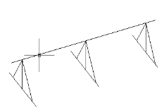
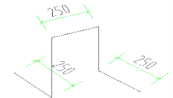

| 中国建筑 项目管理表格 | |||||||||||||||||||||||||||||||||||||||||||||||||||||||||||||||||||||||||||||||||||||||||||||
分项工程技术交底卡 | 表格编号 | |||||||||||||||||||||||||||||||||||||||||||||||||||||||||||||||||||||||||||||||||||||||||||||
CSCES-PM-0803 | ||||||||||||||||||||||||||||||||||||||||||||||||||||||||||||||||||||||||||||||||||||||||||||||
项目名称及编码 | 平顶山高新区湛南棚户区村庄改造项目B区 | 共 5 页 第 1 页 | ||||||||||||||||||||||||||||||||||||||||||||||||||||||||||||||||||||||||||||||||||||||||||||
楼栋号 |
| 分项工程名称 | 钢筋安装 | |||||||||||||||||||||||||||||||||||||||||||||||||||||||||||||||||||||||||||||||||||||||||||
分包公司 |
| 负责人 |
| |||||||||||||||||||||||||||||||||||||||||||||||||||||||||||||||||||||||||||||||||||||||||||
1、施工准备 （一）材料 1、绑扎铁丝：20-22号铁丝。 2、垫块：用水泥砂浆制成的厚度等于保护层同结构混凝土强度的垫块或塑料卡，用 于墙、柱钢筋的垫块内要预埋20～22号火烧丝。 （二）作业条件 1、所有钢筋进场后，应检查合格证，复试记录，按施工平面图中指定位置，按规格、部位、编号分别加垫木堆放。 2、钢筋绑扎前，应检查有无锈蚀现象，除锈之后再运至绑扎部位。 3、熟悉图纸，按设计要求检查已加工好的钢筋规格、形状、数量是否正确。 4、检查好施工现场的抄平、放线工作。 5、根据弹好的线检查预留搭接钢筋的位置、数量、长度。 6、模板安装好已做预检，并清扫净模板内木屑及杂物。 2、操作工艺 （一）基础钢筋绑扎 工序：底板底部钢筋→安放钢筋支架→底板上部钢筋→墙柱插筋。
2、基础四周两根钢筋交点应每点绑扎，双向主筋的钢筋网，则须将全部钢筋交点扎牢。绑扎时应注意扎点的铁丝扣要成“八”字形状（或左右扣绑扎），以免网片歪斜变形。 3、独立基础为双向时，钢筋网的长向钢筋放在短向钢筋的下面，顶部钢筋为长向在上。 4、现浇柱与基础连接的插筋下端，用90°弯勾与基础钢筋进行绑扎，箍筋比柱箍筋缩小一个柱筋直径，以便连接，弯钩长度应符合要求。插筋位置用箍筋固定牢固，以免造成柱子轴线偏移。 5、基础配有双向钢筋网时，应在上层钢筋网下面设置钢筋撑脚，以保证上下层钢筋间距和位置的正确，钢筋撑脚应放置在下排钢筋网片上。 6、筏板及车库抗水板钢筋支架：钢筋支架用三级钢筋焊接制作，其高度=底板厚度-底板钢筋上保护层厚度-上层钢筋直径（钢筋直径高度按钢筋层数累加），立柱间距为纵横向6倍筏板钢筋间距，支架钢筋型号等同于筏板钢筋型号。钢筋支架钢筋严禁与筏板主筋进行焊接，应用双扎丝绑紧。车库抗水板的马镫筋：马镫钢筋用三级钢筋焊接制作，其高度=厚度-2*保护层厚度-∑（上部板筋与板最下排钢筋直径之和），马镫钢筋型号同抗水板钢筋型号，其上平直段为250mm,下平直段为250mm。马镫钢筋设置间距为纵横向间距1m梅花型布置。
 主楼钢筋支架示意图 车库底板及顶板马镫筋示意图 7、墙、柱基础插筋按图集要求插入底板底部。为了保证墙、柱插筋位置正确，放线人员应在底板上层筋上弹出墙、柱插筋位置线，进行插筋施工。为了防止插筋位移，把墙、柱插筋与底板上、下层钢筋分别绑扎并与附加定位筋点焊。墙、柱筋插完后，除检查其位置外，用线坠检查其垂直度，并拉通线校正，确保竖向筋在同一直线上。防止倾斜、扭转、偏位。 8、底板、墙、柱钢筋接头位置要符合设计要求。后浇带跨不设接头，其余跨接头搭接按25%错开，机械连接焊接按50%错开，错开长度35d。 6、为了防止墙柱插筋在浇筑砼时移位，现场派钢筋工专门看守钢筋，一旦有影响钢筋位置的事情发生，及时更正。 （二）墙、柱子钢筋绑扎 1、按图纸间距，算好每根柱箍筋数量，先将箍筋都套在该层伸出的搭接筋上，然后立柱子钢筋，在搭接长度内，绑扎扣不少于三个，绑扣要向里。 纵向受力钢筋机械连接接头及焊接接头连接区段的长度为35倍d（d为纵向受力钢筋的较大直径）且不小于500mm，凡接头中点位于该连接区段长度内的接头均属于同一连接区段。同一连接区段内，纵向受力钢筋机械连接及焊接的接头面积百分率为该区段内有接头的纵向受力钢筋截面面积与全部纵向受力钢筋截面面积的比值。 同一连接区段内，纵向受力钢筋的接头面积百分率应符合设计要求。 2、绑扎接头的位置应相互错开，在受力钢筋1.3倍搭接长度区段范围内（且不小于500mm）有绑扎接头的受力钢筋截面面积占受力钢筋总截面面积应符合不超过50%的规定。 3、绑扎接头的搭接长度按设计要求. 4、在立好的柱子钢筋上用粉笔画出箍筋间距，然后将已套好的箍筋往上移，由下往上宜采用缠扣绑扎。柱顶、梁柱交接等处，箍筋间距应按设计要求加密。 5、柱筋保护层：垫块应绑在柱主筋外皮上，间距一般1000mm左右，以保证主筋上的保护层厚度的正确。 6、当柱截面尺寸有变化时，柱钢筋收缩位置、尺寸要符合设计和规范要求。 7、设计要求箍筋设拉筋，拉筋应钩住箍筋。 （三）梁钢筋绑扎 1、首先在主梁模板上按图纸划好箍筋的间距。 2、主筋穿好箍筋，按已画好的间距逐个分开→固定弯起筋和主筋→穿次梁弯起筋和主筋并套好箍筋→放主梁架立筋、次梁架立筋→隔一定间距将梁底主筋与箍筋绑扎→绑架立筋→再绑主筋。主次梁同时配合进行，箍筋弯钩的叠合处，在梁中应交错绑扎，有抗震要求的结构，箍筋弯钩为135度。如果做成封闭箍时，单面焊长度10d，梁与柱交接处，梁钢筋锚入柱内长度应符合设计要求。主次梁钢筋要在主筋下垫好垫块，以保证主筋保护层的厚度。 3、钢筋搭接长度、位置的规定同柱钢筋绑扎要求。接头百分率为不大于25%的规定。 4、绑扎负弯距钢筋，每个扣均要绑扎，最后在主筋下垫砂浆垫块。 （四）板钢筋绑扎 1、清扫横板上刨花、碎木、电线管头等杂物。用粉笔在模板上划好受力主筋、分布筋间距。 2、按画好的间距，先摆受力主筋，后放分布筋。双向板的底部钢筋为短跨钢筋在下，预埋件、电线管、预留孔洞等及时配合安装。 3、钢筋搭接长度、位置的规定同梁钢筋绑扎第三条要求。 4、绑扎负弯距钢筋，每个扣均要绑扎，最后在主筋下垫砂浆垫块。 5、板底部钢筋伸入支座长度应≥5d,且应超过支座中心线。 （五）楼梯钢筋绑扎 1、在楼梯段底模上画主筋和分布筋的位置线。 2、根据图纸主筋、分布筋的方向，先绑扎主筋后绑扎分布筋，每个交点均绑扎，如果有楼梯梁时，先绑梁后绑板筋。 3、底板筋绑完，待踏步模板吊绑好后再绑扎踏步钢筋。 4、主筋接头数量和位置均要符合施工及验收规范要求。 （六）抗震KZ柱钢筋锚固、搭接长度 1、柱顶纵筋应锚固在顶层梁内。当柱宽大于梁宽，梁宽范围之外的柱纵筋无法锚入梁内时，应将这部份纵筋锚入现浇板中，其锚固长度应从板底算起。无法锚入梁内和板内的柱纵筋应互相焊接。 2、柱纵身钢筋总数为四根时，不可在同一截面连接。多于四根时，同一截面连接接头数不宜多于总根数的50%。 3、纵向受拉钢筋的最小锚固长度LaE及 La （mm）见11G101—1。 3、质量标准 主控项目 1、钢筋的品种和质量必须符合设计要求和有关标准的规定。 2、带有颗粒状或片状老锈，经除锈后仍留有麻点的钢筋，严禁使用。 3、钢筋的规格、形状、尺寸、数量、锚固长度、接头设置必须符合设计要求和施工规范的要求。 钢筋的接头宜设置在受力较小处。同一纵向受力钢筋不宜设置两个接头。接头末端至钢筋弯起点的距离不应小于钢筋直径的 10倍。 4、钢筋对焊接头的机械性能试验结果必须符合钢筋焊接及验收的专门规定。 一般项目 1、缺扣、松扣的数量不超过绑扎扣数的10%，且不应集中。 2、弯钩的朝向应正确。绑扎接头应符合施工规范的规定，每个搭接长度不小于规定值。 3、箍筋的间距数量应符合设计要求，有抗震要求时，弯钩角度为135O，弯钩平直长度应为大于10d和750mm。 4、Ⅰ、Ⅱ级钢筋对焊接头须无烧伤和横向裂纹、焊包均匀。对焊接头处弯折不大于4o，对、焊接头处钢筋轴线的偏移不大于0.1d且不大于2mm。 钢筋安装位置的允许偏差和检验方法
4、成品保护 1、筋绑扎之后，不准踩踏钢筋。 2、楼板的弯起钢筋，负弯距钢筋绑好后，不准踩在上面行走，在浇筑砼前一定保持原有形状，并派钢筋工专门负责修理。 3、绑扎钢筋时禁止碰动预埋件及洞口模板。 4、模板内面涂刷隔离剂时不要污梁钢筋。 5、应注意问题 1、钢筋骨架外形尺寸不准，绑扎时宜将多根钢筋端部对齐，防止绑扎时，某号钢筋偏离规定位置及骨架扭曲变形。 2、保护层砂浆垫块厚度应准确，垫块间距应适宜，否则导致平板悬臂板面出现裂缝，梁底柱侧露筋。 3、柱子箍筋接头无错开放置，绑扎前要先检查；绑扎完成后再检查，若有错误应即纠正。 4、浇筑砼时，受到侧压钢筋位置出现位移时，应及时调整。 5、同截面钢筋接头数量超过规范规定：骨架未绑扎前要检查钢筋对焊接头数量，如超出规范要求，要作调整才可绑扎成型。 6、安全要求 1、所有进场作业人员必须经过三级教育。应按规定佩戴好安全帽，禁止穿拖鞋，打赤脚，赤背和用湿手接触电器开关。 2、搬运钢筋时，要注意前后方向有无碰撞危险或被钩挂料物，特别是避免碰挂周围和上下方向的电线。人工抬运钢筋，上肩卸料要注意安全。 3、在高空安装钢筋应选好位置站稳，系好安全带。 4、所有钢筋机械必须设置防护装置，注意每台机械必须一机一闸一漏一箱。 5、钢筋加工场必须保持道路畅通，危险部位必须设置明显标志。 7、疫情防控要求 1、服从项目部关于疫情防控的封闭式管理和其它管理； 2、配合项目部卡点测体温、登记等工作； 3、必须佩戴口罩。施工现场所有人员都要做好个人防护措施，必须佩戴口罩。 4、宿舍保持通风换气，尽可能打开门窗通风换气； 5、必须做到垃圾无害化处理，口罩丢弃在专用收集箱； 6、服从项目部安排的分餐、错时用餐安排，自觉在人少时候就餐； 7、避免人群聚集，人与距离保持1m以上； 8、注意个人卫生，加强个人防护，避免感冒、发烧。
| ||||||||||||||||||||||||||||||||||||||||||||||||||||||||||||||||||||||||||||||||||||||||||||||
交底人 |
| 交底日期 |
| |||||||||||||||||||||||||||||||||||||||||||||||||||||||||||||||||||||||||||||||||||||||||||
被交底人 |
| |||||||||||||||||||||||||||||||||||||||||||||||||||||||||||||||||||||||||||||||||||||||||||||